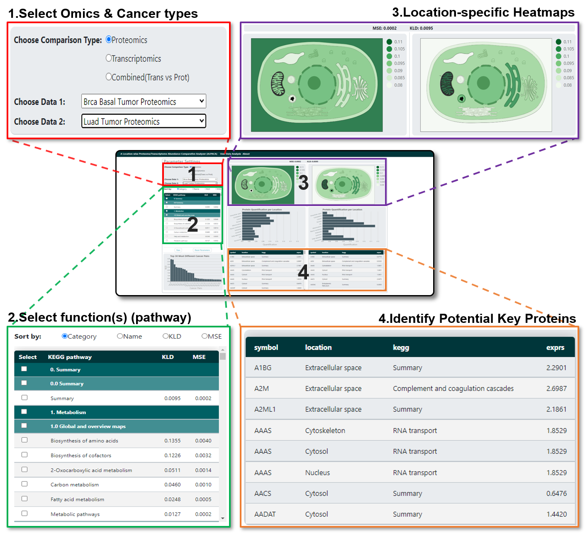
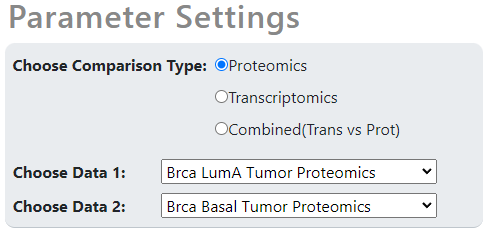
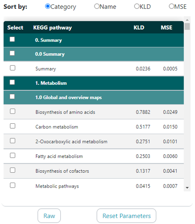
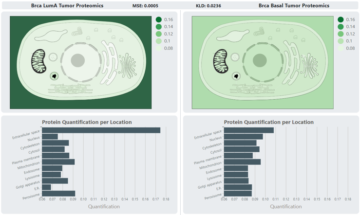
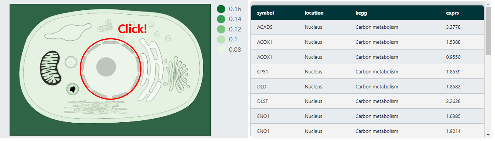

ALPACA
A Location-wise Proteome/transcriptome Abundance Comparative Analyzer
ALPACA is a web-based visual data-mining system for subcellular location-specific knowledge mining from multi-omics data. It lets researchers visually compare transcriptomic and proteomic abundance across cancer types by subcellular location and biological function.
ALPACA calculates location-enrichment distributions from cancer transcriptomic and proteomic abundance data, then presents the results in a pathway-specific view. This makes differences in abundance enrichment easier to interpret in the biological context of interest.

Step 1. Select data
Select the omics types and cancer types to compare. You can compare:
- Proteomics from two different cancers
- Transcriptomics from two different cancers
- Transcriptomics and proteomics from one cancer type

Step 2. Select pathways
After selecting a dataset pair, ALPACA displays location enrichment—the normalized average abundance of genes or proteins—on the cell diagram. Select one or more pathways to add biological context to the analysis.
Pathways can be sorted by the degree of discrepancy between the two cancers. Selecting a pathway or pathway category filters the data to proteins related to that selection.

Raw and reset controls
Raw shows location-enrichment values without normalization, using average abundance values from the original gene expression or protein-quantification data.
Reset Parameters clears selected datasets and pathways and returns the analyzer to its default view.
Step 3. Compare location-specific heatmaps
ALPACA quantifies differences between cancers using mean squared error (MSE) and Kullback–Leibler divergence (KLD). The pathway list can be sorted by MSE or KLD in descending order. Bar charts beneath the cell diagrams present the same location-distribution information in another form.

Step 4. Identify potential key proteins
Examine proteins that may drive similarities or differences in location enrichment. Select a compartment in a cell diagram to filter the table to proteins localized there.
